Supervised Field Assessments
Optional next step after NZGTTM-SA-01 TTM Site Assurance Assessor · Two live site assessments with a Sela lead assessor · Price on request

The online course teaches you how to assess a TTM site. Supervised field assessments are where you show you can do it. You carry out two real site assessments while a Sela lead assessor watches, gives feedback and signs you off.
Complete the online course NZGTTM-SA-01 TTM Site Assurance Assessor, including the final assessment. Go to the online course.
| Ref | You… |
|---|---|
| C1 | Prepare for the visit: TMP, approval, site risk rating, previous reviews and local crash history |
| C2 | Arrive safely: drive-through, park clear of the traffic path, correct PPE |
| C3 | Announce yourself to the STMS and get approval before entering the working space |
| C4 | Complete G1–G8 accurately, with evidence for each |
| C5 | Apply the Sela priority checks P1–P5 that fit the site |
| C6 | Look at the site from the road user’s and the worker’s view, including cyclists and pedestrians |
| C7 | Gather clear, time-stamped, located evidence |
| C8 | Reach a defensible site outcome |
| C9 | Take the right immediate action, including a Stop Work Order where needed |
| C10 | Talk through findings with the STMS respectfully and clearly |
| C11 | Submit a complete report within 24 hours |
| C12 | Stay safe and independent throughout |
Entering a working space without approval, standing in a live traffic path, or missing a Stop Work Order trigger means that site is not achieved. You can book an extra supervised site to try again.
Field assessments are priced on request. The price depends on where the sites are, how far we travel, and how many people are being assessed – we can often assess two people on the same site, and we can use sites on your own contracts with the client’s agreement. Fill in the details below and we’ll come back to you with a quote.
Download the assessment form (PDF)
© 2026 Sela Civil Advisory Limited. Sela endorsement is a company endorsement. It is not an NZQA qualification and does not by itself meet a road controlling authority’s or client’s requirement for an approved reviewer or auditor. References the NZGTTM (© Waka Kotahi, CC BY 4.0). Not produced or endorsed by Waka Kotahi.